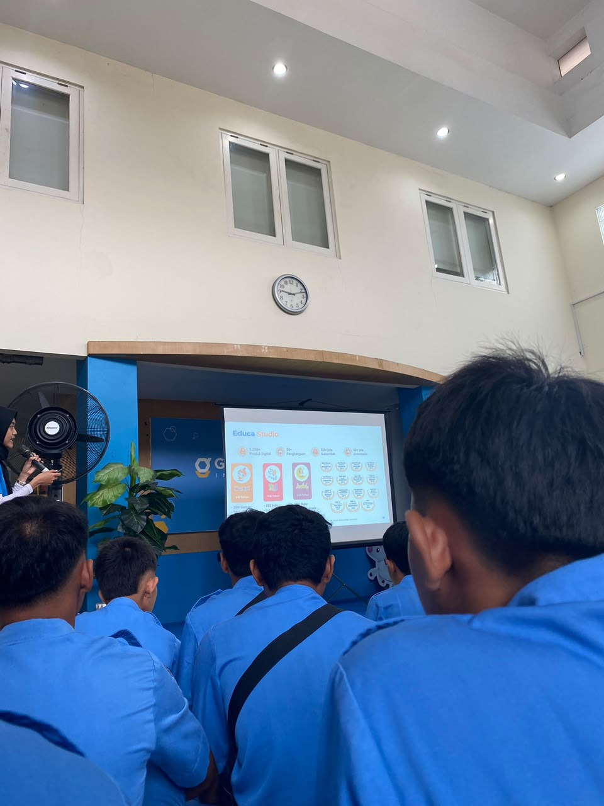
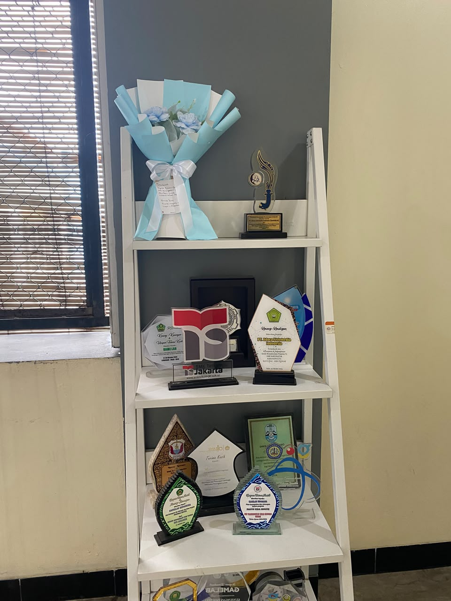
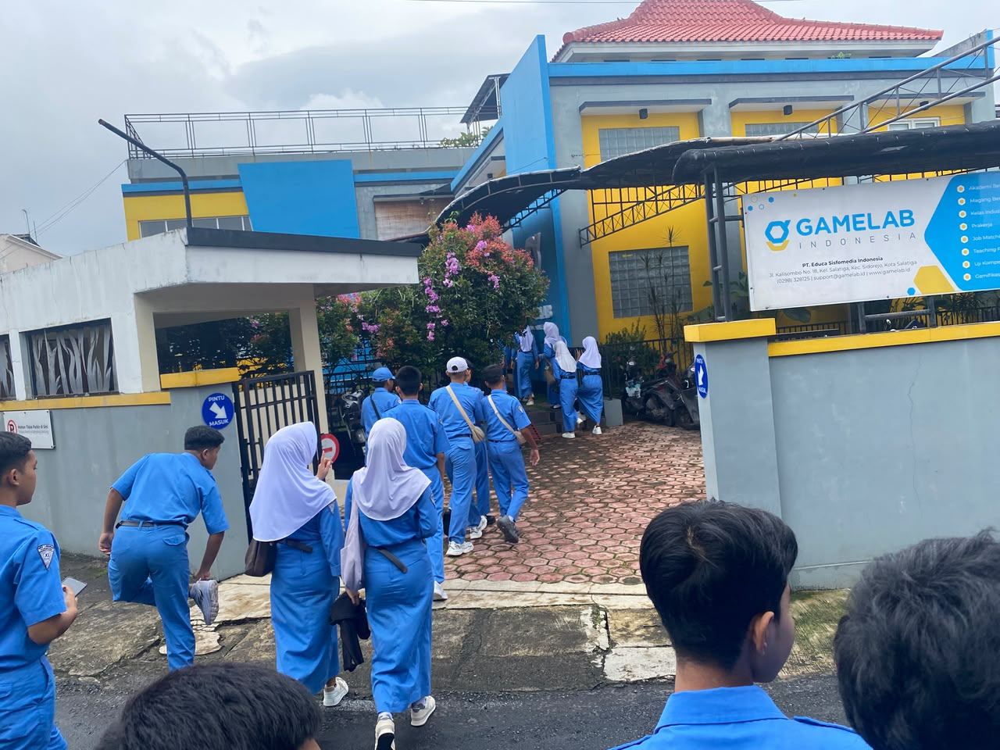

SD Ainul Ulum
Menempuh pendidikan dasar di SD Ainul Ulum dan menyelesaikan pendidikan pada tahun 2021.
Hari Wibowo

Halo, saya
SMK Negeri 1 Jenangan
📍 Ponorogo, Jawa Timur
Junior Web Developer
Saya senang membangun antarmuka yang rapi, cepat, dan enak dipakai — dari layout sampai detail interaksi kecil.
Saya adalah seorang siswa SMK yang tertarik di bidang web development. Saya senang belajar hal-hal baru seputar pembuatan website, mulai dari tampilan hingga cara kerjanya di balik layar.
Saat ini saya sedang mengembangkan kemampuan di HTML, CSS, JavaScript, dan PHP dasar untuk membangun website yang rapi, cepat, dan mudah digunakan.
Riwayat
Menempuh pendidikan dasar di SD Ainul Ulum dan menyelesaikan pendidikan pada tahun 2021.
Menempuh pendidikan menengah pertama di SMPN 1 Pulung hingga tahun 2024.
Menempuh pendidikan kejuruan di SMK Negeri 1 Jenangan dengan mengembangkan kemampuan di bidang web development, desain antarmuka, serta pemrograman dasar.
Perjalanan
Mengerjakan website profil dan website usaha dengan HTML, CSS, JavaScript, serta PHP dasar, mulai dari perancangan tampilan sampai implementasi.
Kumpulan dokumentasi kegiatan.

Kunjungan Industri Di GameLab Salatiga
Trofi GameLab
Gedung GameLabBukti kompetensi
Tempat untuk menampilkan sertifikat, kursus, pelatihan, atau bukti kompetensi yang telah diselesaikan.
Tulisan
Catatan proses belajar HTML, CSS, JavaScript, dan PHP dasar dalam membangun website.
Baca artikelDokumentasi singkat tentang proses, tantangan, dan hal baru yang dipelajari selama mengerjakan proyek.
Baca artikelDibangun dari nol dengan HTML, CSS, dan JavaScript murni — tanpa framework.
Website usaha kecil dengan katalog produk dan halaman kontak.
Kunjungi Toko